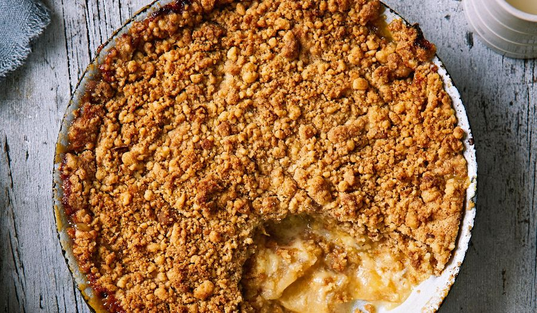

Home
Apple Crumble

With a warm, cinnamon laced apple filling and a perfectly crunchy, crumbly topping, Apple Crumble is an absolute crowd pleaser! Very easy to make, this Apple Crumble recipe is a keeper that you'll make again and again.
Ingredients Required
- Milk
- Vanilla Extract
- Vanilla Custard powder
- CAaster Sugar
- Can pie apple
- Plain Flour
- Ground Cinamon
- Ground Nutmeg
- Butter
Optional :
- Ice cream
Steps
- Preheat the oven to 180°C
- Combine a cup of milk and 1 tsp of Vanilla extract in a saucepan and bring to a boil
- Whisk 1 1/2 tbsp of custard powder, 2 tablespoons caster sugar and 2 tablespoons cold water in a heatproof bowl until smooth.
- Whisking constantly, pour in hot milk mixture in a thin stream. Return mixture to saucepan.
- Spoon apple into six 1-cup capacity dishes or one 6-cup capacity baking dish. Pour over warm custard.
- Combine flour, cinnamon, nutmeg, remaining custard powder and sugar in a bowl. Stir to combine. Add butterUsing. your fingertips, rub into dry ingredients until mixture resembles coarse breadcrumbs.
- catter crumble over custard. Place on a baking tray bake for 30 minutes or until golden.
- Serve like so or with custard and/or ice cream